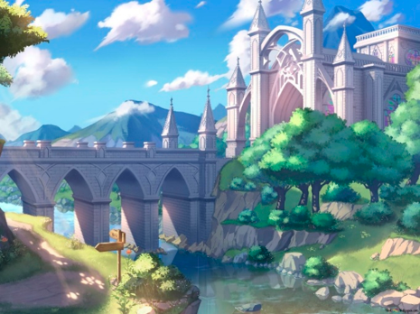
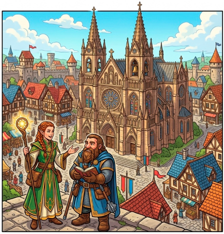
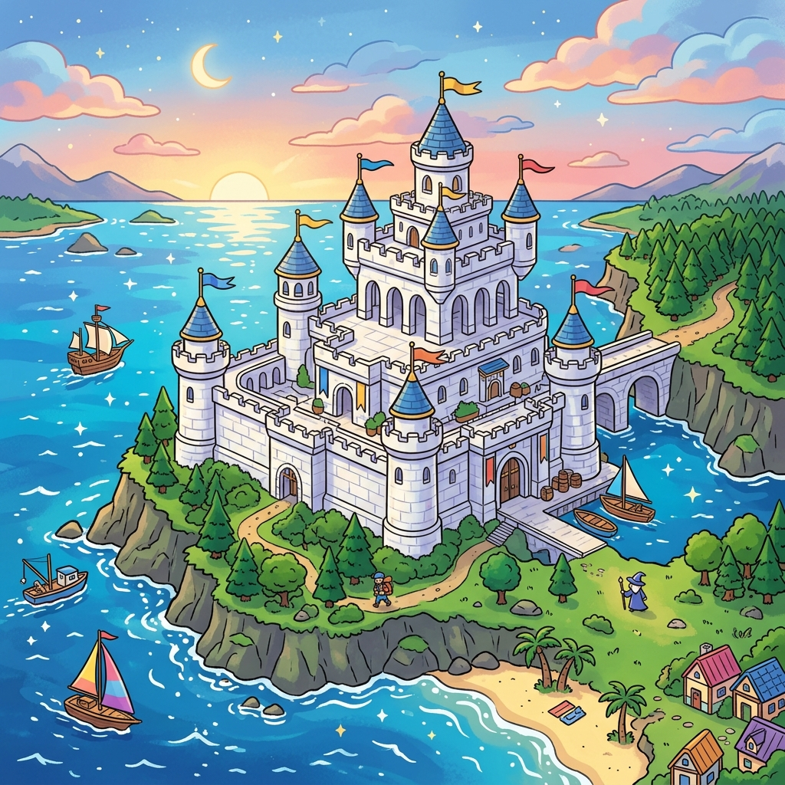
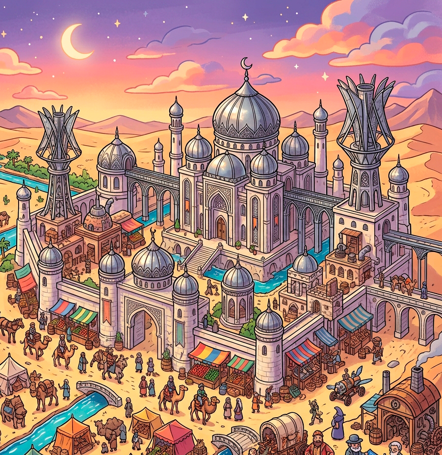
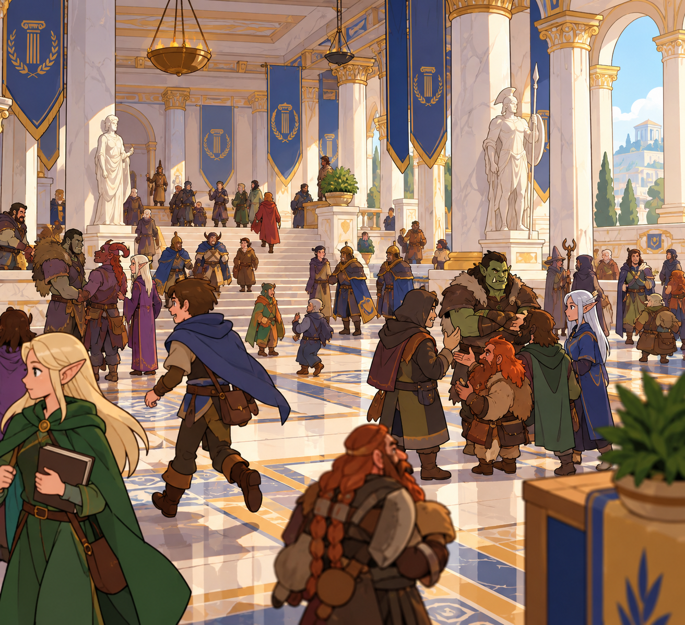
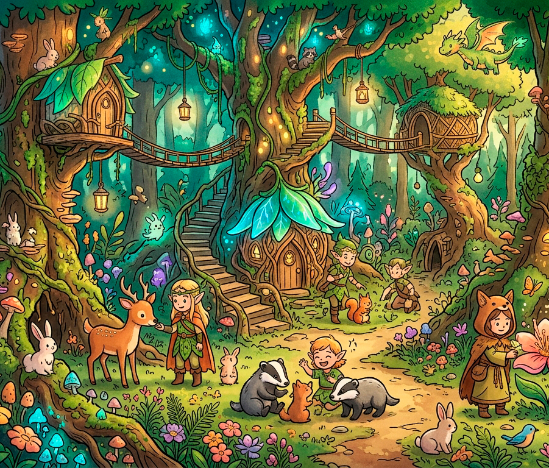
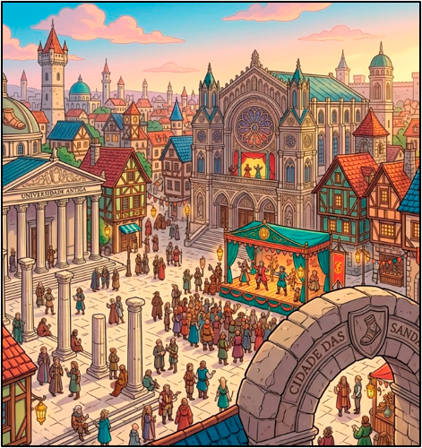
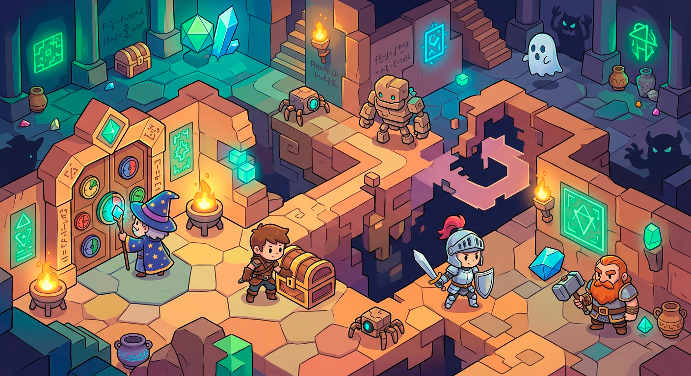
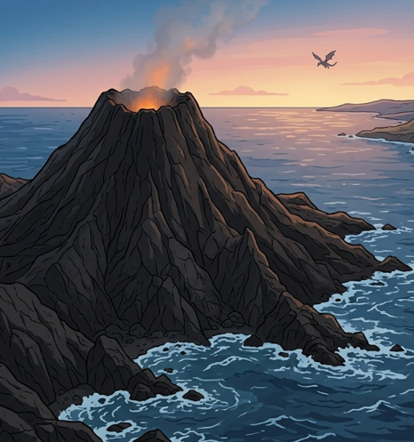

Phantasia é cheio de lugares a se explorar, alguns conhecidos, outros nem tanto, e alguns que alguém ainda precisa descobrir.
Castelo Cavalaria
No coração de Phantasia ergue-se o imponente Castelo Cavalaria, residência da família real e símbolo máximo da autoridade do reino. É de seus salões amplos, adornados com bandeiras e ecos de antigas vitórias, que decisões moldam o destino de toda a nação, guiando seu povo entre tempos de prosperidade e incerteza. O castelo é cercado por uma cidade ativa e moderna, onde negócios prosperam e mistérios são discutidos nas sombras. A maioria dos grandes grupos de aventureiros está aqui quando não explorando, descansando entre um trabalho e outro.
Ao redor do castelo floresceu uma cidade vibrante e em constante movimento, considerada a mais moderna de todo o reino. Mercadores, artesãos e banqueiros fazem dela um centro de riqueza e inovação, onde oportunidades surgem a cada esquina. No entanto, sob essa aparência próspera, existe uma camada mais obscura: becos silenciosos, sociedades secretas e intrigas políticas que se desenrolam longe dos olhos do público. Não é por acaso que muitos dos mais renomados grupos de aventureiros escolhem este lugar como base — aqui, contratos são fechados, rumores circulam livremente e sempre há algo acontecendo, seja nas tavernas iluminadas ou nas sombras mais profundas.
Ao redor da cidade ficam as fazendas do reino, terrenos férteis que garantem o sustento da capital, pontuadas por moinhos, celeiros e pequenas comunidades rurais. Há uma pequena quantidade de vilas ao norte, nas estepes, e a leste, nos pântanos.
O porto mercantil do reino fica ao sul e é de onde saem todas as embarcações para outros continentes. Outros povoados e cidades existem nos arredores.
O rei e a rainha não são mais casados, mas governam juntos, respeitando mutuamente as decisões do parceiro de governo. Alguns consideram isso um equilíbrio delicado (e eles realmente se estranham e brigam de vez em quando), mas tem funcionado bem pelos últimos 10 anos.

Gothica
A leste de Cavalaria ergue-se Gothica, uma cidade de silhueta marcante, construída no topo de um monte escarpado cujas encostas são cobertas por trilhas sinuosas e antigos muros de contenção. De longe, suas torres estreitas e templos de pedra escura parecem tocar o céu, envoltos quase sempre por névoas suaves que lhe conferem um ar solene e enigmático.

Após o isolamento do Monastério Plácido, Gothica ascendeu rapidamente como o principal centro religioso de Phantasia, atraindo peregrinos, estudiosos e curiosos em busca de orientação espiritual ou respostas para inquietações mais profundas. Apesar de Phantasia nunca ter sido dominada por uma única fé, a cidade tornou-se palco de uma mudança sutil, porém poderosa.
Nos últimos anos, um líder religioso carismático conquistou influência crescente, unificando diferentes crenças sob um discurso aparentemente conciliador. Muitos veem nisso uma nova era de ordem espiritual; outros, mais cautelosos, sussurram que Gothica pode estar deixando de ser apenas um refúgio de fé para se tornar o epicentro de algo muito maior.
Palácio de Mármore
Erguida no lado oposto do Castelo Sinistro, a fortaleza nasceu como uma sentinela inabalável, projetada para vigiar cada movimento vindo do sombrio domínio do lich.

Suas muralhas altas e espessas, reforçadas por torres de observação e baluartes, foram concebidas não apenas para resistir a invasões, mas para servir como o primeiro e último bastião contra qualquer ameaça que emergisse das trevas. Houve um tempo em que, dia e noite, vigias atentos percorrem seus parapeitos, atentos a sinais de magia profana ou movimentos suspeitos além do horizonte. Hoje meia dúzia de guardas andam por ali, sem saber o que exatamente estão procurando.
Com o passar das eras, a cidadela deixou de ser apenas um posto avançado e transformou-se no coração militar de Phantasia. Suas dependências cresceram, abrigando campos de treinamento e arsenais vastos. É ali que reside a lendária Guarda de Elite do Rei, guerreiros escolhidos não apenas por sua força, mas por sua lealdade inquebrantável.
Cidade das Abóbodas
Erguida no coração de um vasto deserto, a cidade desafia a própria lógica da sobrevivência, florescendo onde poucos imaginariam possível. Suas construções mesclam pedra clara e metais reluzentes, projetadas para refletir o calor intenso do sol e aproveitar cada sopro de vento que cruza as dunas. Oásis artificiais, canais engenhosamente planejados e torres de captação de água sustentam sua existência, enquanto caravanas carregadas fluem por ali constantemente, transformando o lugar em um dos pontos comerciais mais movimentados de todo o Reinado.
Com o tempo, a cidade tornou-se não apenas um polo de riqueza, mas o verdadeiro centro mercantil e tecnológico de Phantasia. É aqui que as maiores fortunas se concentram, abrigando famílias influentes, magnatas e inventores visionários que financiam e impulsionam avanços nunca antes vistos. Oficinas e academias trabalham lado a lado criando engenhocas curiosas e máquinas capazes de redefinir o equilíbrio de poder.
No entanto, tamanha prosperidade também atrai ambição e rivalidade: acordos são feitos em salões luxuosos, enquanto traições e disputas silenciosas se desenrolam nos bastidores. Nesta cidade, riqueza é poder e o poder, muitas vezes, é tão volátil quanto as areias que a cercam.

Reino dos Sábios
Apesar do nome, a cidade permanece sob o domínio da coroa de Phantasia, sendo um de seus territórios mais respeitados e politicamente sensíveis. Sua denominação remonta ao período turbulento que se seguiu à guerra contra Maniel, quando líderes, emissários e representantes de diferentes povos se reuniram ali pela primeira vez, buscando não apenas encerrar conflitos, mas redesenhar o futuro de todo o continente. Foi nesse solo que antigas rivalidades deram lugar a tratados e onde decisões históricas começaram a moldar uma nova era de convivência.
Hoje, a cidade consolidou-se como o principal centro diplomático do Reinado. Suas construções refletem essa diversidade: salões amplos destinados a assembleias, embaixadas que carregam as marcas culturais de povos distintos e praças onde línguas diferentes se misturam em conversas constantes.

Representantes de diversas espécies e nações se encontram regularmente para debater leis, acordos comerciais, disputas territoriais e alianças estratégicas. No entanto, por trás da aparência de civilidade e ordem, a cidade é também um palco de tensões sutis, intrigas políticas, jogos de influência e negociações silenciosas que podem definir o destino de Phantasia sem que uma única espada seja desembainhada.
Floresta Encantada
Uma vasta e exuberante floresta estende-se por léguas intermináveis, um mar verde onde a luz do sol se filtra em feixes dourados entre copas antigas e imponentes. Rios cristalinos serpenteiam entre raízes milenares, e a vida pulsa em cada canto — desde as menores criaturas até espíritos da natureza que, segundo dizem, caminham livremente entre as árvores.

Este é o lar dos elfos de Phantasia, um povo que não apenas habita a floresta, mas faz parte dela, vivendo em perfeita harmonia com seus ciclos, respeitando seus limites e protegendo seus segredos. Suas cidades não são erguidas contra a natureza, mas moldadas a partir dela: pontes vivas, estruturas entrelaçadas em troncos gigantescos e clareiras sagradas onde o tempo parece desacelerar.
Desde o reinado de Marco I, os elfos mantêm um vínculo formal com a coroa, respondendo ao Reinado em termos de aliança e cooperação. Ainda assim, o tratado firmado naquela época garante a eles autonomia plena sobre o território florestal, um acordo respeitado ao longo das gerações não apenas por honra, mas por necessidade. Nenhum exército de Phantasia atravessa aquelas terras sem permissão, e poucos forasteiros ousam entrar sem guia. A floresta guarda seus próprios mistérios e perigos, e os elfos, silenciosos e vigilantes, asseguram que qualquer ameaça, externa ou interna, seja contida antes mesmo de alcançar suas fronteiras.
Cidade das Sandálias
A Cidade das Sandálias ergue-se como o coração pulsante da cultura no Reinado, onde ruas largas de pedra clara são constantemente preenchidas por músicos, atores e pensadores vindos de todas as regiões. Seus teatros monumentais rivalizam em grandiosidade, enquanto praças abertas se transformam em palcos improvisados para debates acalorados, apresentações poéticas e exibições de talento.

Universidades antigas, com colunas gastas pelo tempo, abrigam estudiosos que dedicam suas vidas à busca do conhecimento, atraindo aprendizes ambiciosos e mentes brilhantes. Ao cair da noite, a cidade não silencia — lanternas douradas iluminam festivais, cortejos artísticos e encontros filosóficos que atravessam a madrugada, tornando-a um lugar onde ideias são tão valiosas quanto ouro e onde até o mais simples viajante pode se tornar parte de algo grandioso.
Tumbas Geométricas
Sob a superfície de Phantasia, estende-se um vasto e inquietante complexo de tumbas e catacumbas, remanescente de uma civilização tão antiga que seu nome se perdeu no tempo. Nenhum registro confiável sobre seu povo, cultura ou queda sobreviveu, apenas ruínas silenciosas, inscrições indecifráveis e uma arquitetura que não se assemelha a nada conhecido no Reinado. Corredores de pedra, câmaras seladas e estruturas subterrâneas que desafiam a lógica sugerem um domínio de conhecimento ou poder que ainda hoje intriga estudiosos e magos.
Apesar dos inúmeros riscos, o local tornou-se um destino recorrente para aventureiros, exploradores e saqueadores em busca de relíquias, ouro e respostas. Poucos, no entanto, retornam com mais do que fragmentos e alguns sequer retornam. Obstáculos físicos e mágicos bloqueiam o avanço nas regiões mais profundas: portas que não se abrem por meios comuns, armadilhas que se rearmam sozinhas, e barreiras arcanas que parecem reagir à presença dos vivos. Há relatos de corredores que mudam de lugar, escadas que levam de volta ao início e salas que desaparecem quando revisitadas.

As histórias que cercam o complexo são tão numerosas quanto perturbadoras. Fala-se de mortos-vivos como múmias que vagam sem descanso, guardiões de metal esquecidos que ainda cumprem ordens antigas e criaturas que espreitam nas sombras, esperando pelo momento certo de atacar. Outros contam sobre tesouros e conhecimentos incalculáveis escondidos em câmaras secretas, protegidos por enigmas e mecanismos impossíveis.
Verdade ou exagero, uma coisa é certa: aquele lugar não foi feito para ser explorado. E talvez ainda esteja cumprindo o propósito para o qual foi construído, seja ele qual for.
Boca do Dragão
